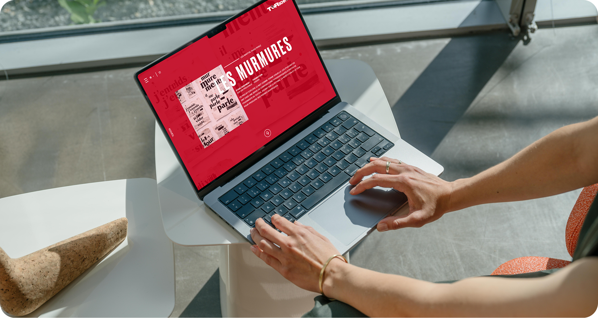
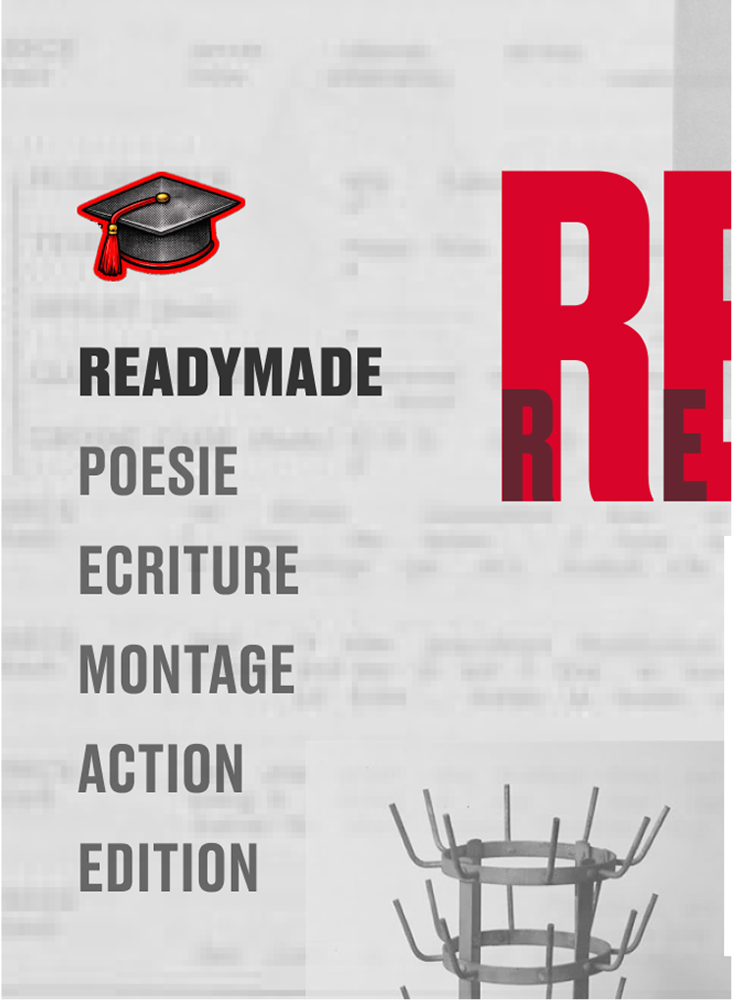
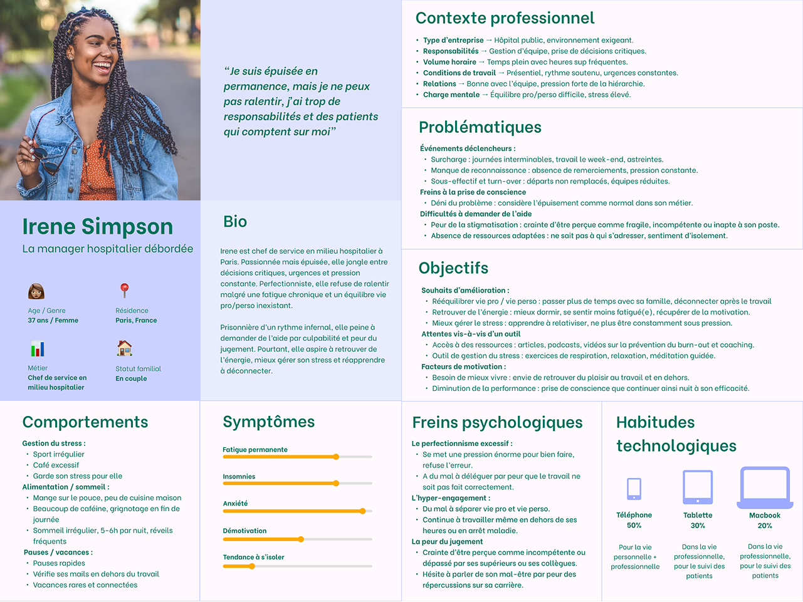

TORSCH
Création d'un site web dans le style du mouvement dada.


Voici ce que le prototype démontre :
SITE ARTISTIQUE POUR UNE ÉCOLE DE DESIGN
Conception d’un site web mettant en avant les projets et l’univers créatif d’une école de design.
INSPIRATION DADAÏSTE
Direction artistique inspirée du mouvement Dada, avec des compositions visuelles expérimentales.
Feedback post-exercice
Retour personnalisé pour encourager la continuité sans culpabiliser.
MISE EN AVANT DES PROJETS
Présentation des travaux étudiants à travers une galerie visuelle et immersive.
IDENTITÉ VISUELLE FORTE
Utilisation de typographies, collages et mises en page inspirés de l’esthétique dadaïste.
OBJECTIF DU PROJET
Créer un site qui traduit l’esprit artistique du mouvement choisi tout en valorisant les projets étudiants.
Contexte
Dans le cadre de ce projet, nous devions choisir un mouvement artistique et concevoir un site web dont le style graphique et l’expérience visuelle s’inspirent de ce mouvement.
L’objectif était d’adapter l’identité visuelle, la mise en page et l’univers graphique du site afin qu’ils reflètent les codes et l’esthétique du mouvement choisi.
Pour ce projet, le mouvement sélectionné est le dadaïsme, connu pour son approche expérimentale, ses collages et ses compositions visuelles originales.
L’objectif était d’adapter l’identité visuelle, la mise en page et l’univers graphique du site afin qu’ils reflètent les codes et l’esthétique du mouvement choisi.
Pour ce projet, le mouvement sélectionné est le dadaïsme, connu pour son approche expérimentale, ses collages et ses compositions visuelles originales.
Problématique
Comment concevoir un site web pour une école de design dont l’identité visuelle et l’expérience utilisateur reflètent les codes du mouvement dadaïste ?
Recherche du logo
Le nom TORSCH s’inspire de l’origine du mouvement Dada, dont le nom aurait été trouvé au hasard dans un dictionnaire. Nous avons repris ce principe en associant deux syllabes, TOR et SCH, pour créer le nom TORSCH.
Ce nom évoque également la torche ou le flambeau, symbole de transmission et de créativité, représentant le passage du mouvement artistique et du savoir à travers le site de l’école.
Ce nom évoque également la torche ou le flambeau, symbole de transmission et de créativité, représentant le passage du mouvement artistique et du savoir à travers le site de l’école.

Diaporama du projet
Mes autres projets


Convaincu ?
Envie d'échanger, de collaborer ou juste de discuter design ? Je suis toujours partante pour un nouveau projet !